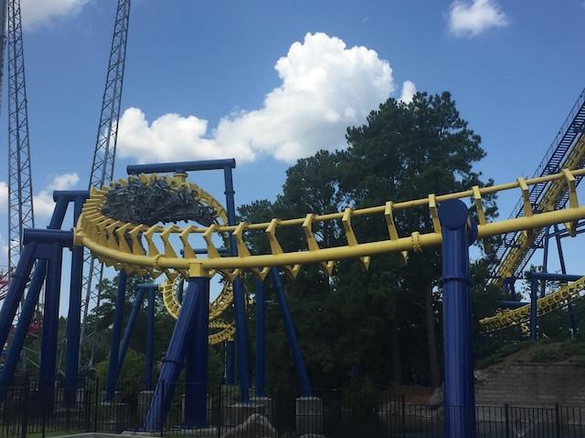
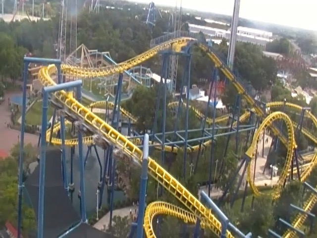
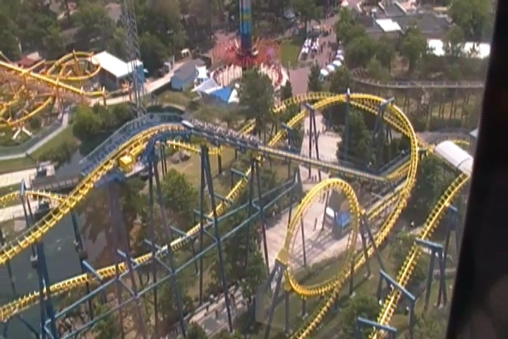
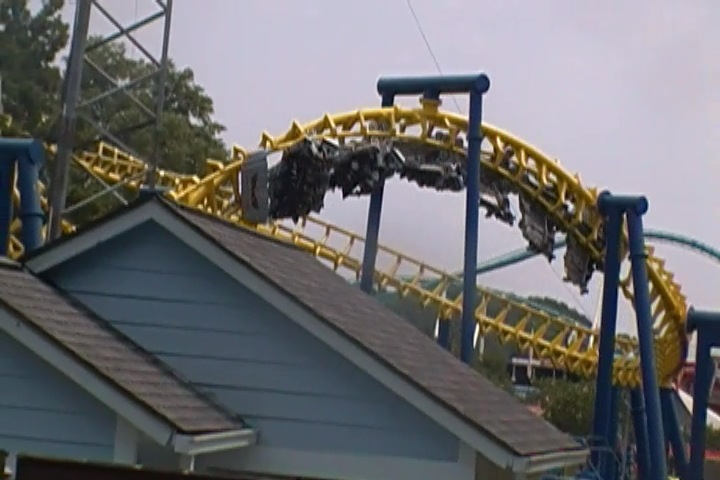
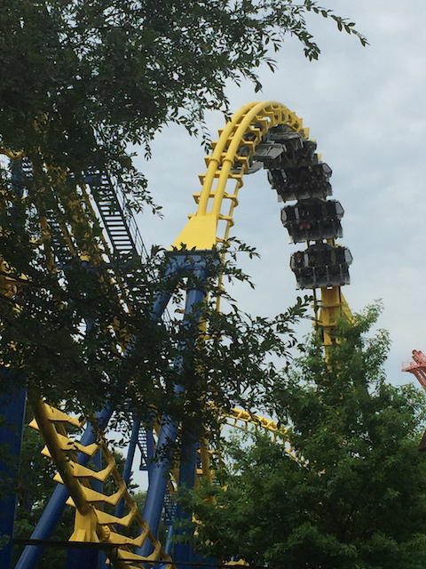
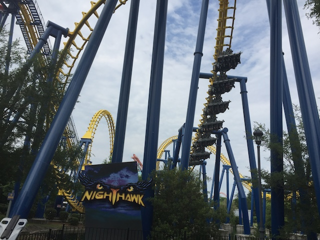
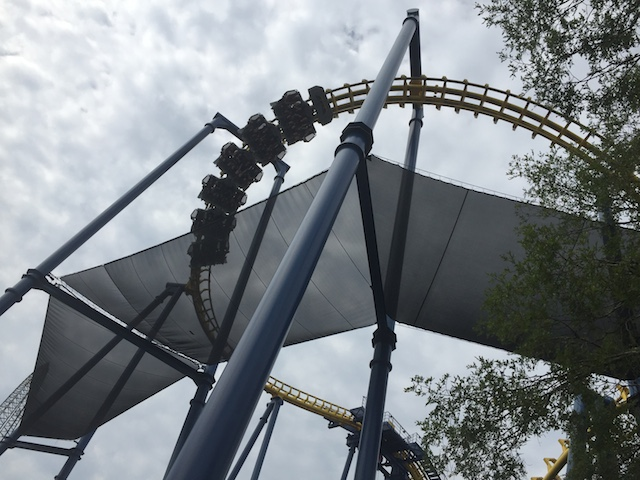
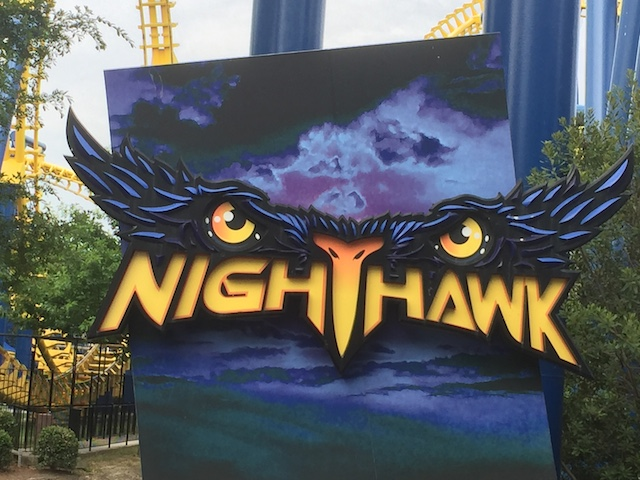

| |
Nighthawk Review

We're here at Carowinds. Today's ride we'll be reviewing is Nighthawk. Once you strap yourself in, the ride gets into flying position, and away you go!!! You roll around a turn and then begin to climb the lifthill. Now during that turn, I would warn you. The sun is going to shine directly in your face and it will freaking blind you. But luckily, once you reach the lifthill, it's all good from there. Since you are climbing up the lifthill backwards, you can't see when you reach the top, which increases the levels of excitement you experience on the ride. Then suddenly, you start to level out and just see the sky, this means you are going backwards again. But don't worry about that. Then you simply just flip over, and are going forewords again. Now we've reached the B&M Flyer position. Then you move onto the first drop. The first drop is really good. It really makes it look like you're diving straight towards the ground. It also provides us with plenty of speed. Then we head straight into an overbanked turn. This is a fun part of the ride and does make it seem like you're flying. Too bad this ride definetly has more of a rattle to it than the other Vekoma Flyer that still exists, Batwing. But at least it's a better view over an artificial body of water. Still flying low to the ground, we then head straight into a big turn. So far, it's just a normal turn, but suddenly, we notice something weird. We're on our backs going backwards again. Yep. There's a half inline twist in this turn. So that provides us with some fun. Anyways, you then head down into one of the best parts of the ride. The Loop. Now while I will admit that I prefer Pretzal Loops to regular vertical loops on flying coasters, but real loops still kick ass and provide a different feel on a flying coaster than on a normal coaster. It sort of just has a weird feel to it that rocks! Anyways, we then head into another turnaround that flips us back on our stomachs facing foreword. We then head back towards the ground with plenty of speed. This just leads us to another turnaround that partially flips us. Yep, we're now on our backs. And it's not exactly a smooth transition. But then we come to the most...awkward part of the ride. The corkscrews. I know on later models, these were changed into the inline twists that you see on Batwing (and Firehawk while it still existed. R.I.P). Cause yeah. You don't just flip through these corkscrews. You tumble through them. It's rough, very clunky, and just feels, wrong. It's fun, provided you don't mind clunky tumbling. After that bit of excitement, we just head around this clunky turn and head into the brakes. Yep. No helix on Nighthawk, like there is on the newer models. So just how was Nighthawk? Yeah. You can tell that this was the first Vekoma Flyer. You can REALLY tell. I know I praised Batwing and defended it whenever enthusiasts claimed that it and the Vekoma flyers were rough. Well on Nighthawk, I can defeinetly see where people were coming from. Now it's not HORRIBLY rough, and I still do find it to be a fun ride. But I'm not going to lie and tell you that this ride is smooth. Because...yeah. It's not. Unfortunetly, it always has a long line due to capacity and popularity, so I'd recommend riding it, but only in the morning before all the crowds come and fill up the line with hour long waits. Also, since Kings Island took out Firehawk, I do not sense a rosy future for Nightawk. So....yeah. Make sure you ride it when you're at Carowinds (Please keep the ride. It's a lot of fun).
7/10
Location: Carowinds
Opened at California's Great America in 2000.
Moved to Carowinds in 2004.
Built by: Vekoma
Last Ridden: July 25, 2019
Nighthawk Photos







Home
|